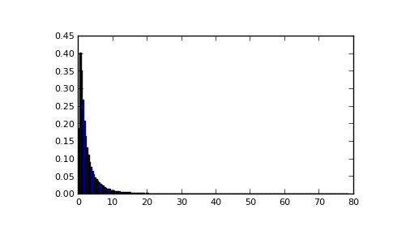

numpy.random.RandomState.wald¶
- RandomState.wald(mean, scale, size=None)¶
Draw samples from a Wald, or Inverse Gaussian, distribution.
As the scale approaches infinity, the distribution becomes more like a Gaussian.
Some references claim that the Wald is an Inverse Gaussian with mean=1, but this is by no means universal.
The Inverse Gaussian distribution was first studied in relationship to Brownian motion. In 1956 M.C.K. Tweedie used the name Inverse Gaussian because there is an inverse relationship between the time to cover a unit distance and distance covered in unit time.
Parameters : mean : scalar
Distribution mean, should be > 0.
scale : scalar
Scale parameter, should be >= 0.
size : int or tuple of ints, optional
Output shape. Default is None, in which case a single value is returned.
Returns : samples : ndarray or scalar
Drawn sample, all greater than zero.
Notes
The probability density function for the Wald distribution is
As noted above the Inverse Gaussian distribution first arise from attempts to model Brownian Motion. It is also a competitor to the Weibull for use in reliability modeling and modeling stock returns and interest rate processes.
References
[R178] Brighton Webs Ltd., Wald Distribution, http://www.brighton-webs.co.uk/distributions/wald.asp [R179] Chhikara, Raj S., and Folks, J. Leroy, “The Inverse Gaussian Distribution: Theory : Methodology, and Applications”, CRC Press, 1988. [R180] Wikipedia, “Wald distribution” http://en.wikipedia.org/wiki/Wald_distribution Examples
Draw values from the distribution and plot the histogram:
>>> import matplotlib.pyplot as plt >>> h = plt.hist(np.random.wald(3, 2, 100000), bins=200, normed=True) >>> plt.show()
(Source code, png, pdf)

{kind=link}